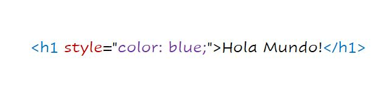
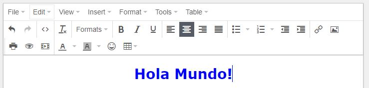

Empezando
Comencemos por aprender cómo podemos incluir CSS en nuestros proyectos. Por lo general, hay tres formas en que lo hacemos.1. CSS en línea
En primer lugar, podemos incluir CSS directamente en nuestros elementos HTML. Para ello, hacemos uso del atributo -- Style -- y luego le proporcionamos propiedades.
Aquí le damos la propiedad de colory establecemos el valor en blue, lo que da como resultado lo siguiente: